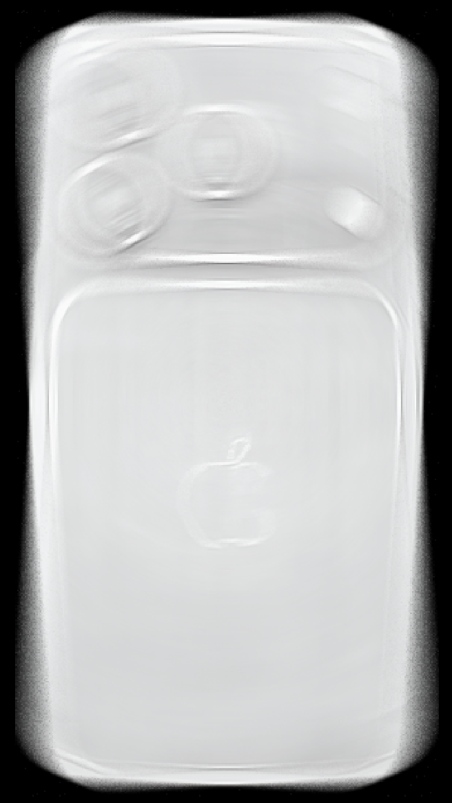
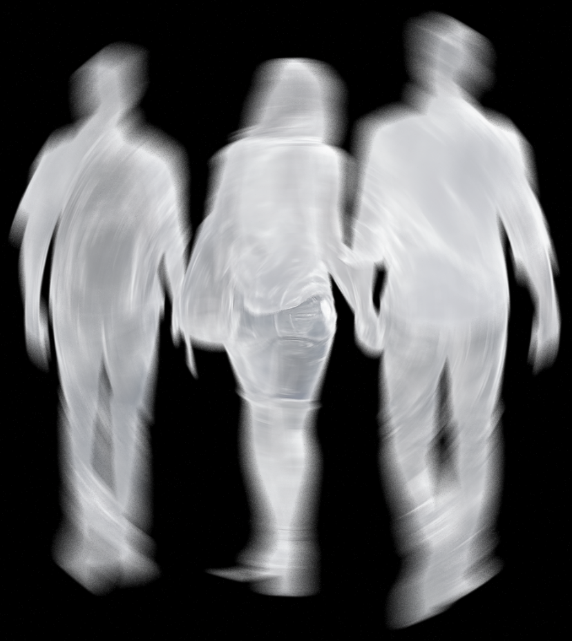
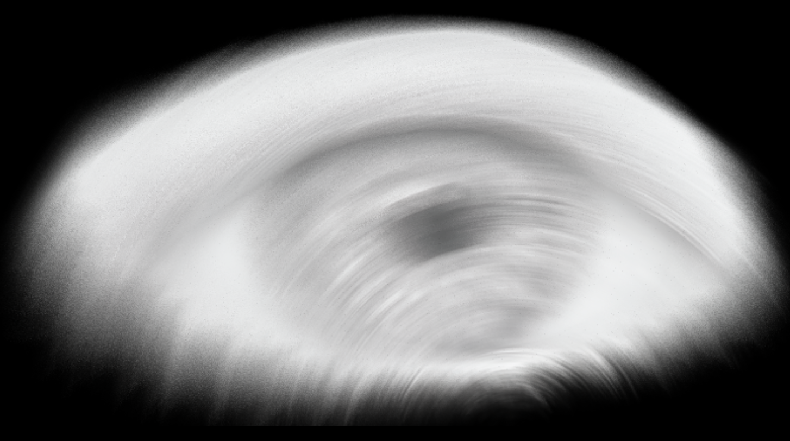

HELLOEARTH
Issue 1 - Transmission
A planetary publication
FOUR POINT FIVE BILLION YEARS IN THE MAKING
HELLO
EARTH
BROADCASTING NOW

Nam June Paik, Good Morning Mr Orwell combined technology, people and cultures together creatively.
5.5B
global social media users
1,375,693,698
posts are shared on instagram daily
1 planet
in a constant state of transmission
THE PREMISE
It was a global satellite television event that combined technology, people and cultures together creatively. At utilised art, music dance and technology to create its visuals, audio and creative pathway.
Nam June Paik inspired by the year 1984 the same year that Orwell’s famous novel was released, empaphasising technology is used for government surveillance and control, Paik Challenge this assumption by through an artistic interpretation the opposite vision. By depicting technology as a creative communication that utilises global cultural exchange media as entertainment and art creating a very hopeful vision of the future pushing the fact media and technology can connect people worldwide positively.
“if you make only high-tech, you make war. we must have a strong human element to keep modesty and natural life”
nam june paik
1,375,693,698
are shared on instagram daily
to family, friends, neighbors, pets. Not all one hundred percent of this content would be postive, uplifting or helpful. It is global. With over five and a half billion users gloabally social media is the largest scale communication network to exist. Harvesting, views, data, attention spans and livelihood of many humans. Broadcasting content, infomation and attention across almost every country. A tool.
PURE DESTRUCTION - PURE HOPE - PURE POTENTIAL
DESTRUCTION
A tool. harvesting everything.
Over one billion photos shared, to family, friends, neighbors, pets. Not all one hundred percent of this content would be postive, uplifting or helpful. It is global. With over five and a half billion users gloabally social media is the largest scale communication network to exist. Harvesting, views, data, attention spans and livelihood of many humans. Broadcasting content, infomation and attention across almost every country. A tool.
HOPE
we. are. capable
Over one billion photos shared, to family, friends, neighbors, pets. Not all one hundred percent of this content would be postive, uplifting or helpful. It is global. With over five and a half billion users gloabally social media is the largest scale communication network to exist. Harvesting, views, data, attention spans and livelihood of many humans. Broadcasting content, infomation and attention across almost every country. A tool.
POTENTIAL
a singular face of transmission
Hand in hand earth is broadcast. There is not one singular “truth” about earth. The planet is a singular surface in a constant state of transmission. Earth is encountered not as a singular image but a stream of fragments circulating across interfaces and updating continuously, streaming in a multitude of flux’s to humans everywhere. Media will not show reality objectively, with mutiple feeds comes multiple truths.



A WIRED NETWORK

CONNECTION IS INFRASTRUCTURE
gloabally we are connected via a series of wires. a interlinked global world where a systemic international media observes global movement. Taking elements of peoples lives from around the world, not to extort but share, help and enact a positive response globally. Blasting live events and assisting efforts to help the globe reach true peace and enlightenment true interconnectivity.
every resident moving through worlds of their own
can this change?
POSITIVE PEACE
A SHARED
TOOL
A NEW
FATE
A truely reflective differing perspective after posting, fed into the planet and spat back out, curating an intangible feed that represents humanity as a whole, a singular planet fragmented into billions of experiances proving media can be postive, a shared tool tearing humanity from it’s current fate and reissuing it a new one.
a interlinked global world where a systemic international media observes global movement. Taking elements of peoples lives from around the world, not to extort but share, help and enact a positive response globally. Blasting live events and assisting efforts to help the globe reach true peace and enlightenment true interconnectivity.
we can rebuild
Then came nineteen eighty four. Signals crossed my surface in real time. Voices travelled across oceans and skies as my inhabitants gathered around glowing frames, witnessing one another simultaneously. For a moment, distance collapsed. I was no longer experienced through fragments of land alone, but as a connected body suspended within transmission.
Now the current moves faster than ever before. Faster than my tides, faster than my forests can recover, faster than the residents moving across me can fully understand. I am changing rapidly, not for the greatest of myself or my inhabitants. I am burning, yet I am drowning in water. My temperature is unstable. My residents are too.
The divide grows with each passing hour. No singular inhabitant stands entirely responsible, yet all participate in the weight I carry. They extract, consume, scroll, repeat. They speak endlessly, yet rarely listen beyond themselves. My surface has become saturated with noise. Signals overlap until meaning begins to dissolve.
And still, there is potential.
Never before have my inhabitants possessed the ability to reach one another at this scale. Invisible pathways stretch endlessly around me, capable of carrying not only distraction and performance, but care, resistance, and understanding. Yet these structures remain flooded with emptiness, broadcasting hopelessness back onto itself, providing hollow stages for isolated residents searching to be seen.
What if this changed.
My inhabitants walk many lives, though most do not realise it. Every resident moves through worlds beyond their own, carrying unseen histories, griefs, and futures alongside them. Meaningful connection is vital now. To share the voices is to share the weight. To listen wider is to live differently upon me.
The pathways already exist. The inhabitants built them. They can rebuild them too.